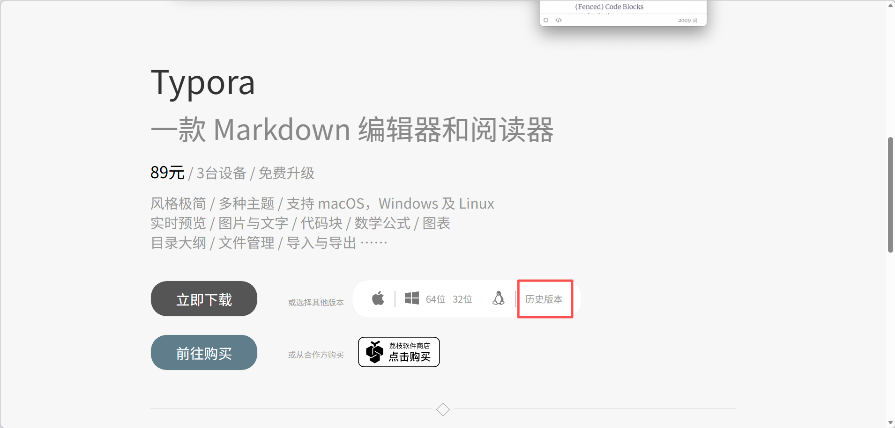
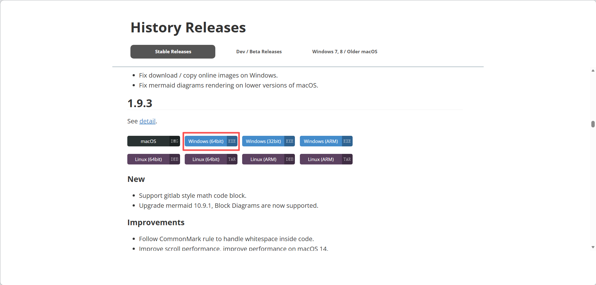
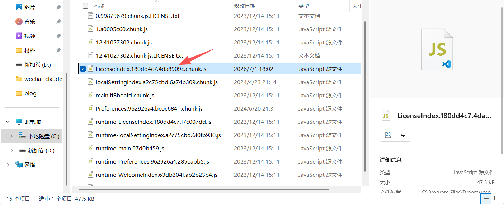
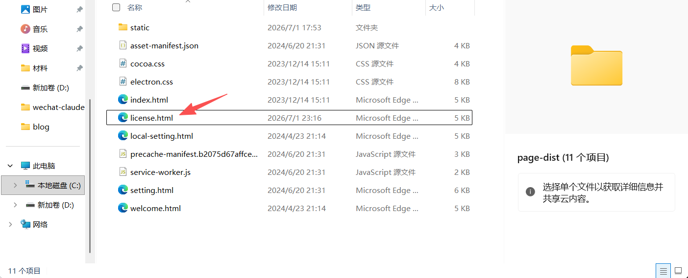

⚠️ 注意
该方法仅适用于 1.10 以下版本
1、下载正版Typora
打开 Typora 官网 https://typoraio.cn/，选择历史版本

往下找到 1.9.3 下载

下好后启动安装程序，按照提示正常安装，记住安装路径。
2、激活
安装后打开文件目录，你的路径不一定是这个！
C:\Program Files\Typora\resources\page-dist\static\js用文本编辑器打开这个文件

Ctrl+F 查找：
e.hasActivated="true"==e.hasActivated替换成：
e.hasActivated="true"=="true"保存后启动 Typora，提示已激活。
3、自动关闭已激活弹窗
在安装目录中找到文件 license.html
C:\Program Files\Typora\resources\page-dist
用文本编辑器打开，Ctrl+F 查找：
</body></html>替换成：
</body><script>window.onload=function(){setTimeout(()=>{window.close();},500);}</script></html>保存后重启 Typora，弹窗激活 500ms 后会自动关闭，如果报错可增加时间。